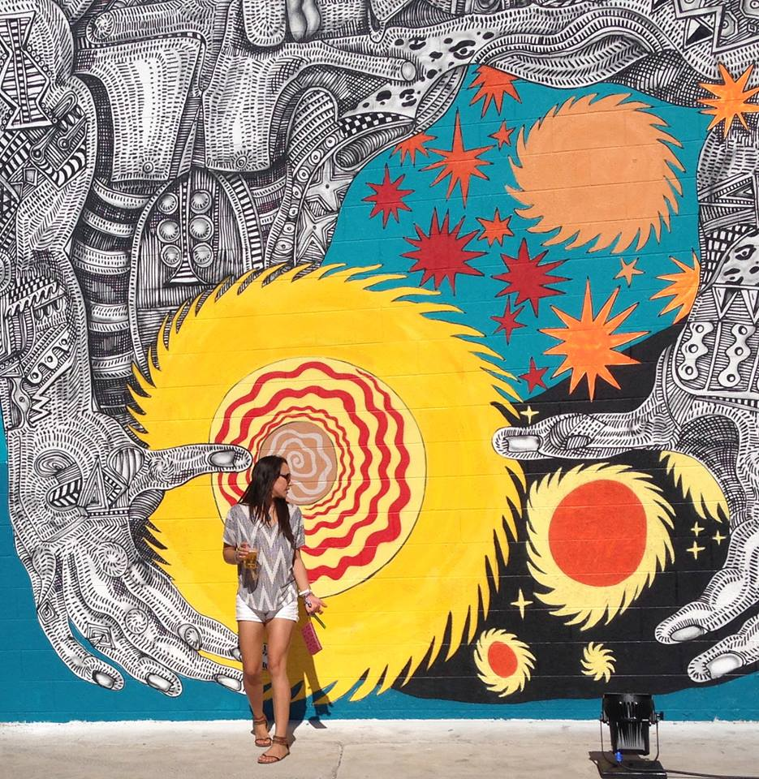

About Me

Jeremee is a proud Nevadan, born and raised in the suburban sprawl of Las Vegas. Like most Nevadans, she enjoys taking the road less traveled expected, if only for sake of befuddling those around her, or, as she likes to think: to help expand others' perspectives :)
You may already be confused that Jeremee is a she, but there was a method to her parents' madness, which I will try to convey with a wee bit of JS (warning I don't know JS past pre-work!):
var fatherName = Jerry
var motherName = Emy
var childName = fatherName + motherName
Well, the equation isn't perfect - Jerry and Emy chose to end the name with an ee instead of a y since Jeremee was a girl - but hopefully it makes sense!
Professionally, Ms. Peters has been working as a Program Manager for 5+ years with the Oracle Corporation, but her passion for coding has caused her to pine dearly for a more technical role, versus the largely business-side position she currently holds. Over the last few years, Jeremee has been tinkering with website design and coding, and has been able to successfully apply this hobby both within the workplace and to assist with friends' personal projects. However, she would like to take her basic skills to the next level, and hopes that the UCSD Coding Bootcamp can make that a reality.
When she's not coding, Jeremee loves discovering new music, playing softball and beach volleyball, planning trips, learning languages, cooking / eating, reading non-fiction, being a doggy parent to Monty, and helping her dad remodel his home.
Jeremee also goes by the name 'JP', so please feel free to call her that too!